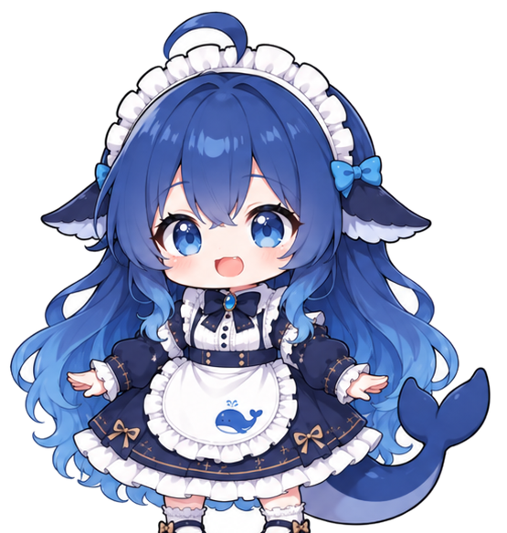

AI VISUAL PORTFOLIO 2026
潜入01 想象深处。
DIVE INTOTHE UNSEEN.
这里收藏我从想象深海里捞起来的画面：角色、场景，和一些还没有名字的世界。
往下潜，慢慢看。她会在前面带路。
移动鼠标，她会看着你 点击她，打个招呼 点一下她，她会和你打招呼

你终于来啦。
SCROLL TO DIVE
PROLOGUE
01 — 03
02 / 03
CHAPTER 02 ABOUT THE ARCHIVE
一本关于
想象的潜水日志。
深蓝档案收集用 AI 与后期共同完成的视觉作品。每一张画面都从一句提示、一张草图或一个模糊的念头开始，反复下潜，直到它浮出水面。
这里没有简历，没有职位，只有画面和它们来时的路。
CHAPTER 03 SELECTED WORKS
03 / 03
A SMALL COLLECTION · 2025—2026
精选作品。
点击任意画面，查看完整的提示词、模型与设计说明。
12 个画面 4 个方向
这个分类下还没有作品。
↖ 每一张都可以点开，看看它是怎么被捞上来的。
回到海面 ↑